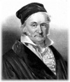

Johann Carl Friedrich Gauss (1777–1855) henüz üç yaşındayken babasının muhasebe kayıtlarını tutuyordu. Yedi yaşındayken kompleks bir matematik sorununu saniyeler içinde çözerek ilkokul öğretmenlerini şaşkınlığa uğrattı. Delikanlılığında Antik Yunan’dan beri çözümsüz kalmış geometri kuramları ile uğraşıyordu.

Bütün yeteneklerine rağmen Gauss’un bir matematikçi olarak kendisini kabul ettirebilmesi için çok uğraşması gerekti. Fakir bir köylü olan babası, oğlunun yaptıklarını onaylamıyor ve onun bir duvar işçisi olmasını istiyordu. Genç Gauss ancak bir burs bularak koleje gitme imkanı bulabildi.
Ne var ki Disquisitiones Arithmeticae (1801) isimli en ünlü kitabının yayınlanmasının ardından her şey değişti. Bir anda önemli matematikçilerin arasında kabul edilmeye başlandı. Kitapta Gauss’un eski tartışmalarla ilgili son on yılda yaptığı buluşlar derlenmişti. Bunların arasında on yedi eşit kenara sahip bir şeklin sadece bir cetvel ve pergel kullanarak çizilebileceğine ilişkin ispat da yer alıyordu. Böylece 2 bin yıl önce Antik Yunanlılar tarafından ortaya atılışından beri matematikçileri uğraştıran bir sorun Gauss tarafından çözülmüş oluyordu.
Gauss aynı yıl, bir astronom tarafından keşfedilen Mars ve Jüpiter arasındaki büyük bir astreoid olan Ceres’in yörüngesini doğru hesaplayarak da ün kazandı. Üstelik bu hesabı kafasından yaptığını iddia etmişti.
19. yy’ın başında bir dizi kişisel sorunla mücadele etmesi gerekti. Bunların sonuncusu 1809 yılında eşinin ölümü oldu. İlk eşinin en yakın arkadaşı olan ikinci eşi de erken öldü. İronik bir biçimde, Gauss’un matematikçi olmak için gösterdiği gençlik isyanına benzer bir biçimde onun iki oğlu da babalarına karşı gelerek ABD’ye göç ettiler. Kendi babasıyla yaşadığı deneyime ve sorunlara rağmen Gauss’un da oğullarıyla arası bu olaydan sonra hep bozuk kaldı.
Gauss 1807 yılında Göttingen Üniversitesi’nde profesör oldu. Hayatının geri kalanında orada kaldı. Yetmiş yedi yaşında öldü.
Ek Bilgiler
1- Gauss ilkokulda öğrenciyken matematik öğretmeni sınıftan 1’den 100’e kadar olan tam sayıları toplamasını istemişti. Öğretmene göre bu oldukça zaman alacak bir işlemdi. Ne var ki çok geçmeden yedi yaşındaki Gauss’un başarısı karşısında şaşkına döndü. Zira Gauss, problemi anında doğru olarak yanıtlamıştı. Yanıt 5050’ydi. Gauss birden yüze kadar olan tam sayıları bir baştan bir sondan olmak üzere 50 çift halinde düşünmüştü: yani 1 ve 100 bir çift, 2 ve 99 bir çift, 3 ve 98 bir çift... Her bir çiftin toplamı 101 ediyordu. Böylece Gauss bulduğu çift sayısını, yani 50’yi 101’le çarparak sonuca ulaşmıştı.
2- Günümüzde manyetik çekim ünitesi anlamına gelen “gauss” kelimesinin isim babası Alman matematikçidir. “Degauss” kelimesi ise bir şeyi demanyetize etmek anlamına gelir.
3- Gauss 1833 yılında, Samuel Morse’un (1791–1872) Baltimore ve Washington arasındaki ünlü telgraf hattını kurmasından on yıl önce, Göttingen’deki gözlemevini üniversiteye bağlayan 1524 metre uzunluğunda bir telegraf hattı inşa etmiştir.